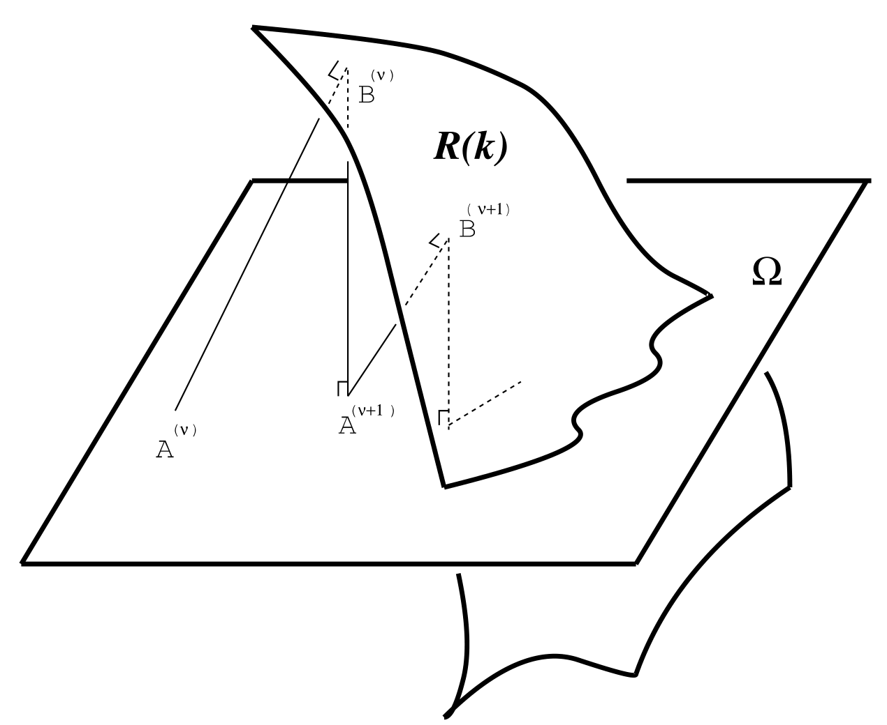

写在前面
最近看了些结构化矩阵(如Hankel矩阵、Toeplitz矩阵)的低秩表示和近似问题，梳理下这篇文章。
结构保持降秩问题
给定任意矩阵A∈Rm×n，找到一个矩阵B^∈Ω，其中Ω表示一类特定的矩阵结构，在如下矩阵范数∥⋅∥意义下求解一个秩k∈[1,rank(A)]近似问题
∥A−B^∥=Bmin∥A−B∥,s.t.B∈Ω,rank(B)=k
该结构化的低秩近似问题的解需要同时满足两个约束
解的性质
在给出算法之前，一般都会去考虑解的存在性和唯一性等理论性质，下面就两个问题给出一些解释。
- 对可行集而言，结构化矩阵能否具有任意低的秩？
- 对于可解性而言，任意给定矩阵能否被一个具有特定结构和特定秩的矩阵近似？
只要可行集非空，如下近似问题必可解：
Bmin∥A−B∥,s.t.B∈Ω,rank(B)≤k
其中Ω是Rm×n的闭子集。该问题与原问题差在约束秩。rank(B)≤k的可行集为闭集可得rank(B)=k有解。但是反过来不一定成立。这是由于给定一个目标矩阵，可能不存在结构化的秩k近似，但是会存在结构化且秩低于k的近似。
下面给出两个特殊结构的结论
- 对称Toeplitz 矩阵可任意低秩近似(Symmetric Toeplitz matrices can have arbitrary lower rank.)
- n×n的Hankel矩阵存在任意给定低秩矩阵近似(There are n × n Hankel matrices with any given lower rank.)
至于解的唯一性，若潜在矩阵维度是无穷大的，通过Hankel低秩矩阵，始终存在与Hankel矩阵的最接近的近似并且解是唯一的。然而，有限维情况下的结论尚未得到解决。
Lift-and-Project法
所有秩k矩阵构成一个曲面R(k)，所有具有矩阵结构Ω的空间构成另一个曲面，那么结构化的秩k矩阵可视为两个曲面的交集。Lift-and-Project法是一个线性收敛的方法来找到这个交空间的点。其核心思想是两个曲面上的交替投影来构造收敛的序列，序列的极限可同时满足两个约束，而收敛的过程中两个约束的距离越来越小。
算法步骤
设初始点A(0)=A∈Ω，迭代计数v=0,1,…，交替迭代如下两个步骤直至收敛：
- Lift: 计算距离矩阵A(v)最近的秩k矩阵B(v)∈R(k)；
- Project: 计算B(v)到子空间Ω的投影A(v+1)；
几何解释

说明
第一步是一个矩阵的低秩近似问题，这个步骤与矩阵的结构无关，所以可以使用截断的奇异值分解算法来完成，用前k个奇异值和对应的奇异向量来重构出秩k矩阵。
第二步是矩阵的投影问题，这个解非常依赖于矩阵结构Ω本身。对于简单的线性结构，解一般都是显示的闭解。例如Hankel矩阵和Toeplitz矩阵，仅需要做一个最小二乘取平均即得到投影矩阵。
算法得到两个序列{A(v)}和{B(v)}具有如下的下降性质：
∥A(v+1)−Bv+1∥F≤∥A(v+1)−Bv∥F≤∥A(v)−Bv∥F
因此，在Frobenius范数意义下，Lift-and-Project法是一个下降算法。
点对点的映射
如果上述Lift-and-Project法以T∈Ω为初值迭代产生收敛的序列，定义映射
Pk:Ω→Ω∩R(k)
为该序列的极限点Pk(T)。
注意：
- 不要误解极限Pk(T)是Ω中距离T最接近的秩k矩阵。
- 对任意矩阵A，Pk(A)不是结构保持降秩近似问题的解。
对称Toeplitz矩阵的分解式
秩为k的对称Toeplitz矩阵代数关系可分解为
M(α1,…,αk,y(1),…,y(1))=i=1∑kαiy(i)y(i)T=[mij]
其中向量y(i)满足互正交关系
mj,j+s1=m1,s,s=1,…,n−1;j=2,…,n−s+1αi=0,y(i)Ty(i)=δij,i,j=1,…,k.
参考文献